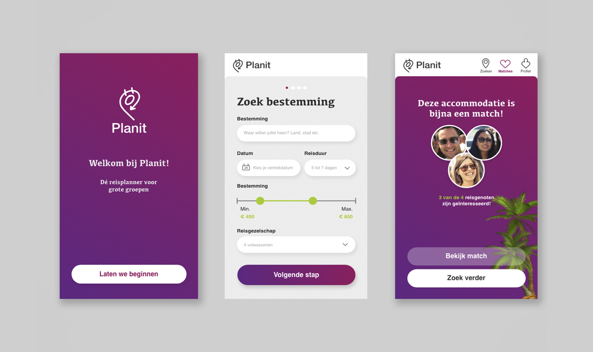

Mijn portfolio
Mijn werk

Fun Forest: Catch the Night!
Een totaal concept om de jonge doelgroep meer te betrekken bij het klim parcours. Vang alle dieren in het bos door met je lasergun op de lichtjes in de bomen te schieten! Hoe hoger je klimt, hoe meer punten je kunt verzamelen. Maar pas op! Stoor je de boze vleermuis, dan verlies je 2 punten!
Bekijk dit project

Planit Reisplanner
Planit is een applicatie voor het plannen van een reis met een groep. Vul je wensen in (budget, locatie, type reis) en verstuur de uitnodiging naar iedereen die mee gaat. Nu kan ieder op zijn eigen gemak een accomodatie kiezen. Wanneer meerdere dezelfde reis 'liken' is er een match!
Bekijk dit project

Cooldown
Cooldown helpt sporters hun spieren te masseren na een intensieve workout. In de app zien sporters welke spieren zij het meest belast hebben. Hier wordt de cooldown op gebaseerd. Door de voorgestelde oefeningen te doen, zullen spieren beter herstellen en prestaties zullen omhoog gaan.
Bekijk dit project

FiNancy App
FiNancy is een financiële guide voor internationale studenten in Amsterdam. In de app kan de student tips & tricks lezen over alles wat met geld te maken heeft. Ook kan de student zijn eigen financiën bijhouden. Dit zorgt voor een zorgeloos verblijf in Amsterdam.
Bekijk dit project